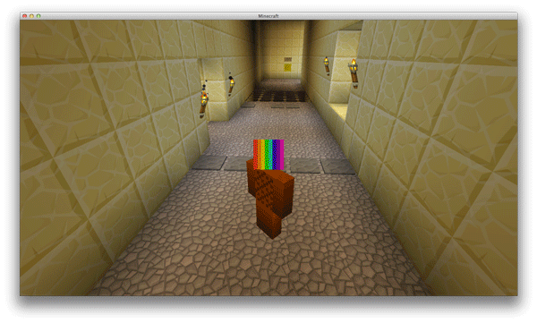

Triggers
Triggers are very similar to colliders but instead of being a barrier which cant be walked in to, it is a detector which main purpose is to be walked in to or detect that something has entered it. It can detect players, npcs, objects.
Triggers are the most primitive game element we can introduce in a game. From a simple switch which opens some door, to a very complicated puzzles or systems which can very easily keep us occupied for several hours.
Minecraft trigger trap

What makes a trigger detect stuff?
Grid
On a grid based game, we can identify a trigger with a specific trigger tile. If we can identify which tile on the grid is for walking and which is not, we can also create another class of a tile which is meant for triggering.
Colliders
Primitive shapes which describe a specific volume can be also used as triggers in most physics engines. We usually have to use some kind of flag on the collider to make it act as a trigger, otherwise it would be behaving as a wall.
Events
Every trigger triggers an event when it detects something. An event is simply a link to a specific function. That function is called when we activate the trigger.
Implementation
Our trigger script needs to inherit from MonoBehaviour in order so it can receive messages about triggers.
MonoBehaviour class implements three trigger related messages.
- OnTriggerEnter
- OnTriggerStay
- OnTriggerExit
We will use only OnTriggerEnter and OnTriggerExit for now.
Naive trigger
The code above will do most of its job but it is far from perfect. It is made as simple as possible but does not cover many different cases. One of the case is that if two objects enter and then single object exits we will get this sequence.
OnTriggerEnter Collider1 // Enable wall
OnTriggerEnter Collider2 // Enable wall
OnTriggerExit Collider1 // Disable wall
If our events would just enable and disable a wall for example, The wall would disable early even that an collider is still inside the trigger, that is because we got an OnTriggerExit early because an collider has exited the trigger.
- One of the solutions would be to make sure that only a single collider can enter and exit the trigger. But this would be very hard to achieve in the scene.
- The other solution is to remember which colliders have entered and which colliders have left the trigger.
Counter trigger
This solution triggers enter only when at least single object enters the trigger and triggers exit only when all objects leave the trigger. This trigger is pretty robust towards multiple object detection.